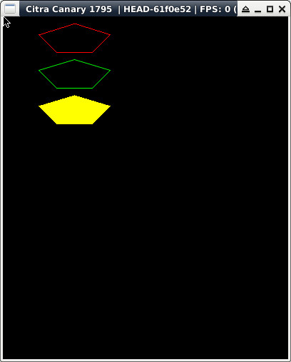

參考資訊：
https://libctru.devkitpro.org/index.html
https://github.com/devkitPro/3ds-examples
main.c
#include <stdio.h>
#include <stdlib.h>
#include <SDL.h>
#include <SDL_gfxPrimitives.h>
int main(void)
{
SDL_Surface *screen = NULL;
Sint16 vx0[] = {100, 150, 125, 75, 50};
Sint16 vy0[] = {10, 25, 50, 50, 25};
Sint16 vx1[] = {100, 150, 125, 75, 50};
Sint16 vy1[] = {60, 75, 100, 100, 75};
Sint16 vx2[] = {100, 150, 125, 75, 50};
Sint16 vy2[] = {110, 125, 150, 150, 125};
SDL_Init(SDL_INIT_VIDEO);
screen = SDL_SetVideoMode(400, 240, 16, SDL_HWSURFACE);
polygonRGBA(screen, vx0, vy0, 5, 0xff, 0x00, 0x00, 0xff);
aapolygonRGBA(screen, vx1, vy1, 5, 0x00, 0xff, 0x00, 0xff);
filledPolygonRGBA(screen, vx2, vy2, 5, 0xff, 0xff, 0x00, 0xff);
SDL_Flip(screen);
SDL_Delay(3000);
SDL_Quit();
return 0;
}
完成
